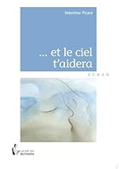

Face à Étienne, les yeux dans les yeux, elle lui prend les mains qu'elle joint aux siennes en les posant sur sa poitrine et sa voix se fait plus douce : Regarde-moi, écoute-moi, ne m'interromps pas. Je vais te délivrer un message. Retiens bien chaque phrase, chaque mot. Je ne peux te le dire qu'une fois. Lorsque j'aurai fini, tu me poseras une question, une seule. Après quoi, tu accompliras ce qui doit être accompli. Si tu as besoin d'aide, je serai là. Étienne, rendu muet par le ton grave et solennel de sa cousine, fait oui de la tête. Alors Gaby parle lentement, en détachant les mots avec application : Tu es ici au milieu des deux mondes. Une mort vaut une vie. Tu aideras un humain à mourir, un autre à naître, puis tu choisiras ta fonction d'éternité. » Ce n'est pas le fantastique qui prime dans ce roman qui place un défunt face à une double mission... Nulle recherche du sensationnel ou du frisson de la part de Valentine Picard qui aborde cette dimension avec discrétion et retenue, pour mieux développer sa vision de l'existence et des relations humaines... Une conception qui implique compréhension et compassion, respect et sens du pardon, mansuétude et chaleur, qui fait ainsi de cette uvre un tendre conte philosophique dont on ressort avec un sentiment plus apaisé pour soi-même et pour autrui.